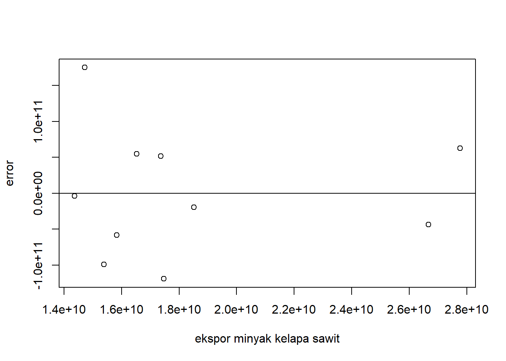
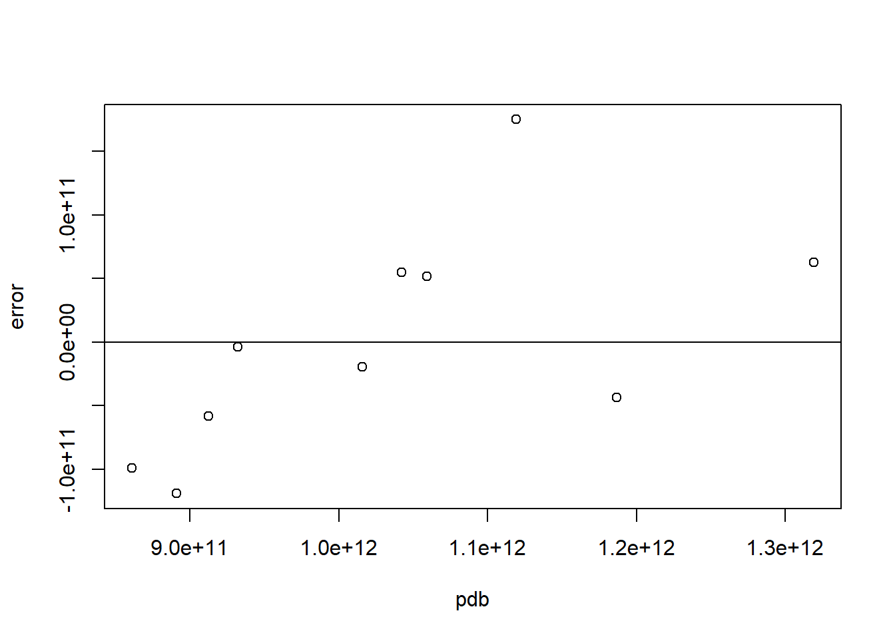

library(tidyverse)
library(readxl)
library(WDI) Pengaruh Ekspor Minyak Kelapa Sawit terhadap PDB di Indonesia Periode 2013-2022
Metode Penelitian Politeknik APP Jakarta

1 Pendahuluan
1.1 Latar belakang
Penelitian ini dimulai dengan menggambarkan pentingnya sektor minyak kelapa sawit dalam ekonomi Indonesia selama periode 2013-2022. Pertumbuhan ekspor minyak kelapa sawit telah menjadi salah satu pendorong utama pertumbuhan ekonomi negara ini. Selain itu, penelitian ini bertujuan untuk menganalisis dampak ekspor minyak kelapa sawit terhadap Produk Domestik Bruto (PDB) Indonesia selama periode tersebut.
Alasan pemilihan periode 2013-2022 adalah untuk dapat mengamati tren dan pola dalam ketergantungan ekonomi Indonesia terhadap ekspor minyak kelapa sawit dalam rentang waktu yang cukup panjang. Data yang komprehensif selama periode ini akan memberikan pemahaman mengenai pengaruh ekspor minyak kelapa sawit terhadap pertumbuhan ekonomi dan kontribusinya terhadap PDB.
Dalam konteks ini, penelitian ini bertujuan untuk menilai apakah ekspor minyak kelapa sawit masih memegang peran penting dalam pertumbuhan ekonomi di Indonesia serta dapat menjadi sumber pendapatan yang signifikan.
1.2 Ruang lingkup
Pada penelitian ini penulis mengambil objek penelitian dari UN Comtrade Database dan World Development Indicators. Ruang lingkup penelitian ini yaitu Nilai ekspor minyak kelapa sawit dari Indonesia serta Nilai Produk Domestik Bruto (PDB) Indonesia dengan menggunakan data yang bersifat time series yaitu dalam kurun waktu 2013-2022. Satuan pada data ini telah diubah ke dalam USD untuk memudahkan penyetaraan mata uang secara internasional, dan dengan batasan ruang lingkup ini dapat membantu mengidentifikasi masalah yang akan dibahas.
1.3 Rumusan masalah
Berdasarkan latar belakang yang telah diuraikan, maka rumusan masalah yang digunakan sebagai berikut:
Apakah ekspor minyak kelapa sawit mempegaruhi PDB di Indonesia selama periode 2013-2022?
Apakah terdapat hubungan antara jumlah ekspor minyak kelapa sawit dengan pertumbuhan ekonomi?
1.4 Tujuan dan manfaat penelitian
Tujuan dari penelitian ini adalah untuk menilai bagaimana ekspor minyak kelapa sawit memengaruhi Pertumbuhan Domestik Bruto (PDB) Indonesia selama periode 2013-2022. Selain itu, untuk mengidentifikasi apakah terdapat hubungan yang signifikan antara jumlah ekspor minyak kelapa sawit terhadap pertubuhan ekonomi Indonesia.
Manfaat penelitian, antara lain:
Bagi Pembaca Memberikan wawasan tentang pentingnya dan dampak ekspor minyak kelapa sawit terhadap pertumbuhan ekonomi nasional.
Bagi Industri Memberikan informasi yang berguna bagi para pelaku industry minyak kelapa sawit untuk memahami hubungan antara ekspor dan pertumbuhan ekonomi.
1.5 Package
Packages yang digunakan pada penelitian ini antara lain sebagai berikut:
2 Studi pustaka
Indonesia sebagai negara produsen pertama yang mengekspor minyak sawit (Syamsulbahri, 1996). meskipun kini posisinya telah tergeser oleh Malaysia, namun Indonesia masih berhasil mempertahankan suplai minyak sawit hingga saat ini.
Minyak kelapa sawit merupakan salah satu jenis minyak yang paling banyak dikonsumsi dan diproduksi di seluruh dunia.Karena minyak kelapa sawit terjangkau, mudah diproduksi, dan sangat stabil, minyak ini dapat digunakan untuk berbagai jenis makanan, kosmetik, dan produk perawatan pribadi. Minyak ini juga dapat digunakan sebagai pengganti biofuel atau biodiesel. Banyak pabrik pengolahan kelapa sawit kecil diproduksi di Asia, Afrika, dan Amerika Utara karena pabrik-pabrik kecil tersebut membutuhkan kelembaban tinggi, suhu rendah, dan panjang pemotongan yang pendek untuk memaksimalkan produksinya.
Indonesia adalah salah satu produsen kelapa sawit terbesar di dunia, dengan total luas area mencapai 16,38 juta hektar dan produksi CPO sebesar 46,8 juta ton. Dari berbagai jenis kelapa sawit, kelapa sawit kelapa adalah produk yang paling dikenal oleh masyarakat umum.
Dalam konteks ekonomi, kelapa sawit telah berperan sebagai kontributor utama dalam ekonomi negara di masing-masing dari 38 provinsi dan kota di Indonesia. Banyak pulau dan kota yang terdampak oleh kelapa sawit, terutama di Provinsi Riau dan pulau lainnya di Kalimantan dan Sulawesi.
3 Metode penelitian
3.1 Data
Berikut data yang digunakan dalam penelitian dalam satuan USD:
| Tahun | ekspor (X) | PDB (Y) |
|---|---|---|
| 2013 | 15.838.850.170 | 9.125241e+11 |
| 2014 | 17.464.904.662 | 8.908148e+11 |
| 2015 | 15.385.275.322 | 8.608542e+11 |
| 2016 | 14.365.422.161 | 9.318774e+11 |
| 2017 | 18.513.462.522 | 1.015619e+12 |
| 2018 | 16.527.848.105 | 1.042272e+12 |
| 2019 | 14.716.274.696 | 1.119100e+12 |
| 2020 | 17.363.920.824 | 1.059055e+12 |
| 2021 | 26.665.127.850 | 1.186505e+12 |
| 2022 | 27.765.830.185 | 1.319100e+12 |
Penelitian ini menggunakan data sekunder dengan bentuk data time series 2013-2022, data yang digunakan adalah data yang telah diolah oleh UN Comtrade Database.
setwd('D:/Metodologi Penelitian/Tugas UAS')
dat<-read_excel('latihan.xlsx')
library('readxl')
reg1<-lm(data=dat,Y~X)
dat$u<-resid(reg1)
plot(dat$X,dat$u,xlab="ekspor minyak kelapa sawit",ylab="error")
abline(h=0)
Plot Pengaruh Error terhadap ekspor minyak kelapa sawit
library('readxl')
dat$u<-resid(reg1)
plot(dat$Y,dat$u,xlab="pdb",ylab="error")
abline(h=0)
Plot Pengaruh Error terhadap PDB di Indonesia
3.2 Metode analisis
Metode yang dipilih adalah regresi univariat atau Ordinary Least Square (OLS) dengan 1 variabel independen. Penelitian ini merbaksud mencari hubungan antara PDB Indonesia dan Nilai ekspor minyak kelapa sawit. Spesifikasi yang dilakukan adalah:
\[ y_{t}=\beta_0 + \beta_1 x_t+\mu_t \] di mana \(y_t\) adalah PDB Indonesia dan \(x_t\) adalah Nilai ekspor minyak kelapa sawit.
4 Pembahasan
4.1 Pembahasan masalah
| Variabel | Estimate Std. | Error | t value | Prob (.) |
|---|---|---|---|---|
| Intercept | 5.920e+11 | 1.236e+11 | 4.790 | 0.00137 |
| X | 2.393e+01 | 6.500e+00 | 3.682 | 0.00620 |
| R Squared | 0.6289 | |||
| Adjusted R Squared | 0.5825 | |||
| F-statistic | 13.56 | |||
| Prob(F-statistic) | 0.006203 |
Hasil regresi setelah dimasukan ke dalam rumus persamaan adalah:
\[ Y=5.290 + 2.393X \]
Ekspor memainkan peran penting dalam meningkatkan Pertumbuhan Domestik Bruto (PDB) melalui dampak positif variabel X, namun analisis regresi menunjukkan bahwa pengaruh ekspor terhadap PDB Indonesia tidak bersifat mutlak. Artinya, peningkatan PDB tidak hanya disebabkan oleh ekspor semata, melainkan dipengaruhi oleh faktor-faktor lain. Dapat diasumsikan bahwa setiap kenaikan nilai ekspor sebesar 1 maka terjadi peningkatan PDB sebesar 5.920.
Adjusted R-squared sebesar 0.5825 mengindikasikan bahwa variabel independen dalam penelitian ini dapat menjelaskan sekitar 58,25% variasi variabel dependen. F-statistik dengan nilai 13.56 mengimplikasikan bahwa variabel independen, seperti ekspor, memiliki pengaruh signifikan terhadap pertumbuhan ekonomi atau PDB di Indonesia dalam jangka panjang.
4.2 Analisis masalah
Hasil regresinya adalah
setwd('D:/Metodologi Penelitian/Tugas UAS')
dat<-read_excel('latihan.xlsx')
library('readxl')
reg1<-lm(data=dat,Y~X)
summary(reg1)
Call:
lm(formula = Y ~ X, data = dat)
Residuals:
Min 1Q Median 3Q Max
-1.191e+11 -5.478e+10 -1.165e+10 5.395e+10 1.749e+11
Coefficients:
Estimate Std. Error t value Pr(>|t|)
(Intercept) 5.920e+11 1.236e+11 4.790 0.00137 **
X 2.393e+01 6.500e+00 3.682 0.00620 **
---
Signif. codes: 0 '***' 0.001 '**' 0.01 '*' 0.05 '.' 0.1 ' ' 1
Residual standard error: 9.351e+10 on 8 degrees of freedom
Multiple R-squared: 0.6289, Adjusted R-squared: 0.5825
F-statistic: 13.56 on 1 and 8 DF, p-value: 0.006203Dapat dilihat dari tabel diatas bahwa setiap kenaikan nilai ekspor minyak kelapa sawit sebesar 1, maka terjadi peningkatan pertumbuhan ekonomi atau PDB sebesar 5.920 di Indonesia.
5 Kesimpulan
Setelah dilakukan penelitian melalui sistem regresi univariat, maka dapat disimpulkan bahwa:
Ekspor minyak kelapa sawit mempengaruhi terhadap PDB di Indonesia pada periode 2013-2022, namun hal ini bukan merupakan faktor utama yang mempengaruhi PDB Indonesia karena terdapat faktor lainnya juga yang menunjang peningkatan PDB di Indonesia.
Hubungan antara jumlah ekspor kelapa sawit dengan PDB Indonesia dapat dilihat dari nilai ekspor minyak kelapa sawit yang memiliki nilai positif sehingga apabila jumlah minyak kelapa sawit yang diekspor ke luar negeri semakin banyak maka arus modal yang masuk ke dalam negeri juga dalam jumlah yang banyak.
6 Referensi
Abidin, Z. (2008). Analisis Ekspor Minyak Kelapa Sawit (Cpo) Indonesia. In Jurnal Aplikasi Manajemen (Vol. 06, Issue 01, pp. 139–144). https://jurnaljam.ub.ac.id/index.php/jam/article/view/1863
Indonesia Investments. (2024, January 7). Minyak Kelapa Sawit Indonesia - Produksi & Ekspor CPO | Indonesia Investments. Indonesia-Investments.com. https://www.indonesia-investments.com/id/bisnis/komoditas/minyak-sawit/item166
Kementerian Pertanian Direktorat Jenderal Perkebunan : KONTRIBUSI MINYAK KELAPA SAWIT INDONESIA MENGATASI KRISIS PANGAN GLOBAL. (2022). Pertanian.go.id. https://ditjenbun.pertanian.go.id/kontribusi-minyak-kelapa-sawit-indonesia-mengatasi-krisis-pangan-global/
Kinski, N., Tanjung, A. A., & Sukardi. (2023). Analisis Pengaruh Ekspor dan Impor Terhadap Pertumbuhan Ekonomi di Indonesia Tahun 2018 – 2. Ganaya : Jurnal Ilmu Sosial Dan Humaniora, 6(3), 568–578. https://doi.org/10.37329/ganaya.v6i3.2498
PT. Redbuzz Mediatama. (2017). Kelapa Sawit Indonesia Semakin Menjadi Andalan Ekonomi Nasional | Bina Sawit Makmur. Binasawitmakmur.com. https://binasawitmakmur.com/berita/kelapa-sawit-indonesia-semakin-menjadi-andalan-ekonomi-nasional